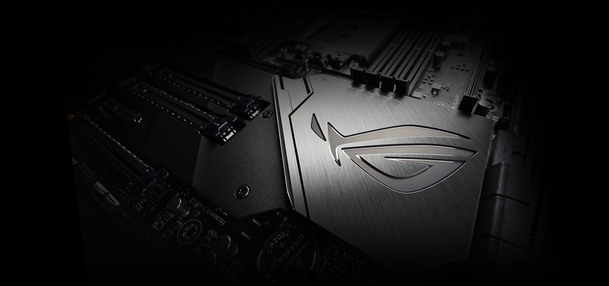

AMD B450 ATX 電競主機板搭載 Aura Sync RGB LED 燈效、DDR4 3533MHz 支援、雙 M.2 及原生 USB 3.1 Gen 2。
Realtek S1200A 轉碼器： 具備前所未有的 108dB 訊噪比（立體聲音訊輸出）和 103dB SNR（音訊輸入），提供純淨音質
獨家 DTS® Custom 音效： 提供位置提示至立體聲耳機，助您掌握敵方位置和動態
GPU 溫度感測和 Fan Xpert 4 Core： 確保每個風扇都在散熱效能和靜音效果之間取得最佳平衡
TUF 防護： SafeSlot、ESD 防護、DDR4 過電壓防護、Digi+ VRM 和不鏽鋼背面 I/O，提供長期可靠性
軍用級 TUF 組件： TUF LANGuard、TUF 電感、TUF 電容和 TUF MOSFET，提供最大耐用性
TUF 防護
SAFESLOT
保護貴重的顯示卡
SafeSlot 是 ASUS 重新改造的 PCIe 插槽，經過特殊設計，可提供更高的固定力與剪切阻力。 SafeSlot
採用全新嵌入成型製程一體成型，結合強固金屬，大幅提高插槽本身的耐用性，然後透過額外焊接點，將插槽牢牢固定在 PCB 上。
AMD TR4插槽：適用於第一代和第二代AMD Ryzen™Threadripper™系列處理器，可通過多達三個M.2驅動器和USB 3.1 Gen 2，提供最佳連接性和傳輸速度。
全面的散熱設計： 配備整合式VRM風扇的主動散熱器、PCIe區M.2鋁製散熱器和雙背板設計。
高效能網絡：板載Aquantia®10Gbps LAN、支援 MU-MIMO的 802.11ac Wi-Fi，以及採用華碩 LANGuard和 GameFirst V技術的 Intel Gigabit LAN
5 向全方位優化：自動化系統調校，為玩家提供量身訂製的超頻及散熱配置。
SafeSlot 技術：堅固的PCIe插槽，採用金屬加固，支援重型顯示卡。
無與倫比的個性化：搭載LiveDash OLED和華碩獨有的Aura Sync RGB燈效技術，包含兩個RGB插座和可編程插座。
散熱
即使以規格速度執行，也能確保 32 核心處理器維持低溫。Alpha 擁有完整配備，可為極致的 PC 系統提供最佳基礎，以較低的溫度提供更高的效能。

Gamer's Guardian： 預裝 I/O 護板、ASUS SafeSlot 及頂級元件，發揮最大耐用性。
高速記憶體與儲存空間： 支援雙通道 DDR4 3200MHz (OC) 及 NVM Express® RAID。
Aura Sync RGB： 使可編程 RGB 燈條等各式相容電腦的配備與 LED 燈效同步。
遊戲音效： SupremeFX S1220A 搭配 Sonic Studio III，創造「聲」歷其境的音效，讓您更加投入遊戲當中。
遊戲連線： Intel Gigabit 乙太網路、ASUS LANGuard 與 GameFirst 技術。
5 向最佳化： 自動全系統調校，提供專為電腦量身打造的超頻和散熱功能。